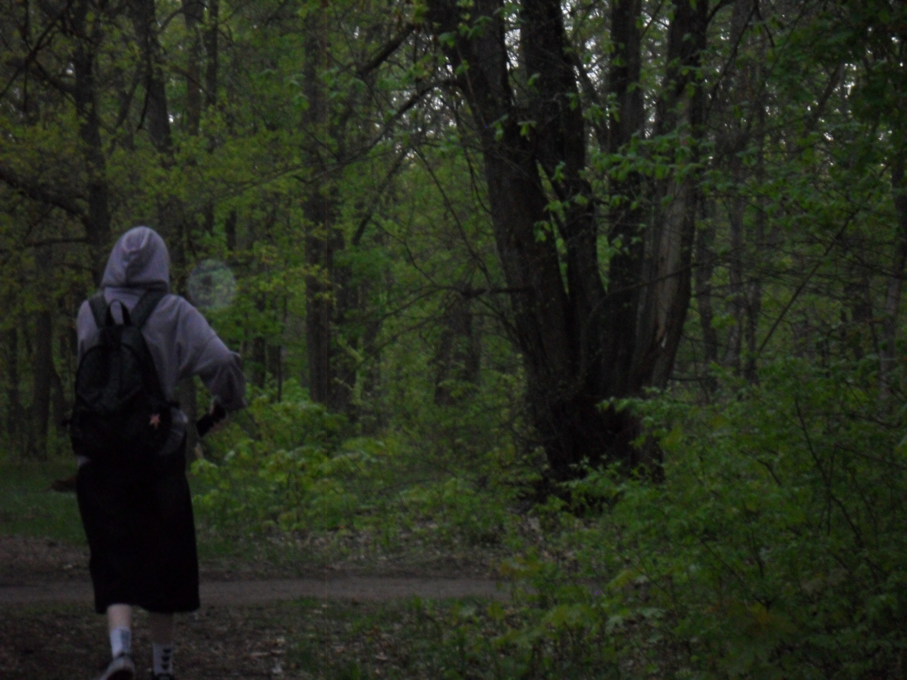

Привет! Я ksntired/Ксения
Контент-менеджер, SEO-специалист и начинающий разработчик. В digital — почти год. Люблю аккуратную структуру, измеримые результаты и красивые интерфейсы.
- 🎓 СПО (2025): программист.
- 🎓 Сейчас: 1 курс Тольяттинской академии управления, прикладная информатика.
- 🎯 План: открыть собственное дело и в перспективе переквалифицироваться в информационную безопасность.
- 🧑💻 Мне 20 лет.
20
проектов с моим участием
~1 год
опыта в digital
3
направления: Контент · SEO · Код

Обо мне подробнее
Я совмещаю контент и SEO, а также делаю простые инструменты на JavaScript и Python, чтобы ускорять рутину и улучшать качество работы.
Что я делаю
- Заполняю и структурирую сайты, настраиваю навигацию, улучшаю UX-копирайтинг.
- Провожу SEO-аудиты, собираю семантику, пишу технические задания и продвигаю сайты.
- Делаю небольшие утилиты (парсеры, отчёты), интегрирую аналитику, готовлю понятные отчёты.
Куда иду дальше
- Собственное digital-направление с акцентом на качество контента и прозрачную аналитику.
- Углубление в безопасность: сначала прикладная информатика, затем информационная безопасность.
Образование и планы
-
СПО (2025) — «Программист»выпуск
-
Тольяттинская академия управления — 1 курснаправление «Прикладная информатика»
-
Планы: собственное дело и ИБпереквалификация в информационную безопасность
Навыки
Мои ключевые компетенции в контенте, SEO и разработке. Оцениваю уровень честно и по опыту.
Content-manager
90%
SEO
55%
HTML/CSS
45%
Java
50%
Python
25%
Избранные проекты
Лучшие кейсы и проекты, которыми горжусь. Подробнее — в полном портфолио.
Все проекты →


Достижения
Достижения в профессиональных событиях, обучених и выступлених.
Курс «SEO-специалист от AMDG»
20.08.2025 — Онлайн — Подготовка финального проекта и защита кейса.
20.08.2025 — Онлайн — Подготовка финального проекта и защита кейса.
Студент года 2024
9.06.2025 — Тольятти — Номинация: Профессионал года
9.06.2025 — Тольятти — Номинация: Профессионал года
Защита дипломного проекта
9.06.2025 — Тольятти — Тема: Разработка и автоматизация рабочего места сотрудника кадрового агенства.
9.06.2025 — Тольятти — Тема: Разработка и автоматизация рабочего места сотрудника кадрового агенства.
ТАУ-Skills
14.05.2023 — Тольятти — II Открытый чемпионат профессионального мастерства ТАУ skills для юниоров с 14 лет.
14.05.2023 — Тольятти — II Открытый чемпионат профессионального мастерства ТАУ skills для юниоров с 14 лет.
Профессионалы
08.03.2023 — Тольятти — Веб-технологии
08.03.2023 — Тольятти — Веб-технологии